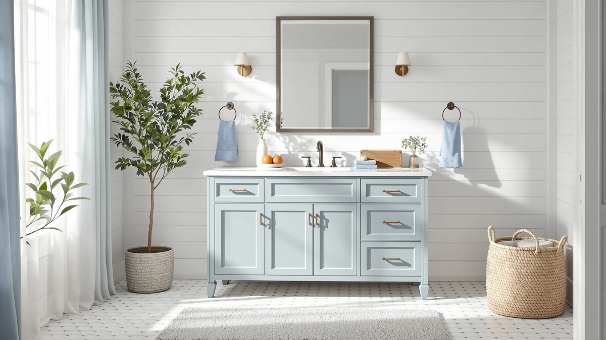

Spring Mill Cabinets Emlyn Bathroom Vanity Review (2026): Worth It?


Quick Answer
This Spring Mill Cabinets Emlyn bathroom vanity review finds a 30-inch shaker-style vanity that pairs a deep blue cabinet with a one-piece white marble-look top for $359.97. It earns its place on color and a seamless sink top, not on price or extra features, and three similarly priced alternatives below cover wider bathrooms and different finishes.
Our pick: Spring Mill Cabinets Emlyn 30, $359.97 Check Price on Amazon
Bottom line: our top pick is the Spring Mill Cabinets Emlyn 30 Inch Bathroom Vanity with White at $359.97.
Things to Know Before You Buy
- All four vanities in this comparison price within eleven dollars of each other, from $349.99 to $359.97, so the decision comes down to size, color and sink configuration rather than budget.
- None of the four listings publish a star rating or review count through the Amazon Creators feed, so there is no verified review tally to check against buyer complaints for any of them.
- The Emlyn's one-piece marble-look top has no overflow hole and does not include a faucet or drain, and both add to the real cost of installing it.
- Width varies the most between options: the Emlyn and the THINK 30 pick fit a 30-inch opening, the Tribesigns needs 36 inches, and the LIKIMIO needs 47.2 inches of wall space.
This Spring Mill Cabinets Emlyn bathroom vanity review looks at a 30-inch shaker-style vanity that pairs a deep blue cabinet with a white cultured marble top, priced at $359.97. We compared its construction, sink design and price against three similarly priced 30-to-47-inch vanities to see where the Emlyn earns its spot and where a buyer might be better served by one of the alternatives. The short version: the Emlyn's main advantage is its one-piece marble-look top and distinctive color, not a lower price or extra storage.
We are not a testing lab, and we do not own any of the four vanities covered here. Instead, we read the manufacturer specs and listing details for each one, checked current Amazon pricing, and looked for a published star rating or review count on every listing. None of the four vanities in this comparison carry a verified rating through the Amazon Creators feed we use, which is common for newer listings in this category, so this Spring Mill Cabinets Emlyn vanity review leans on construction details and price rather than a review tally we cannot confirm.
The four vanities also share a price band narrow enough that cost alone will not settle the decision. At $349.99 to $359.97, you are not trading up or down in budget by much as you move between them, which means the real differences show up in cabinet width, sink material and door hardware instead. That makes this comparison narrower and more useful than a typical roundup spanning dozens of dollars in price, since the choice comes down to layout and finish rather than a tradeoff between a cheap option and a premium one.
Why You Should Trust Us
Ilane Tall covers bathroom fixtures and vanities for Best Bathroom Vanities, with a focus on separating marketing copy from what a listing's own specs actually support. For this Spring Mill Cabinets Emlyn bathroom vanity review, she pulled the manufacturer's stated materials, dimensions and price for the Emlyn and three comparable vanities rather than repeating brand language. Best Bathroom Vanities earns a commission when you buy through our links, but that relationship does not decide which vanity we recommend. We do not run a testing lab, and when a listing's documentation is thin, as it is for all four vanities here, we say so instead of filling the gap with a number we cannot verify.
Our Research Experience
We did not install the Emlyn or any of the three alternatives, and we did not run water through their sinks. For this Spring Mill Cabinets Emlyn vanity review, the comparison work means reading each product page closely, matching the stated cabinet dimensions against standard 30-to-48-inch vanity openings, and checking current Amazon pricing against what each listing has charged recently. We also looked for a star rating or review count on every listing, and none of the four publish one through the Amazon Creators feed we use, so instead of citing a figure we cannot confirm, we are flagging that gap directly. For the Emlyn specifically, the predrilled faucet hole and the overflow-free sink top come straight from the manufacturer's listed specs rather than something we confirmed by installing the vanity ourselves.
Overview & Specs

Spring Mill Cabinets Emlyn 30
What we like
- One-piece cultured marble top avoids the seam and caulk line a separate drop-in sink creates
- Deep blue shaker-style cabinet stands out against white tile without a custom paint order
- Full-extension bottom drawer adds storage beyond the two-door cabinet
Flaws but not dealbreakers
- Sink top has no overflow hole, so a faucet left running can spill onto the counter
- Faucet and drain are sold separately, adding to the $359.97 price
- No published star rating or review count to weigh against buyer complaints
| Material | MDF / engineered wood |
| Size | 30.5" W x 18.75" D x 32.89" H |
At $359.97, the Spring Mill Cabinets Emlyn 30 is a 30.5-inch-wide vanity built around a two-door cabinet and a single full-extension drawer, finished in a deep blue laminate with fine-grain nickel hardware. That color is the main reason this vanity shows up in a Spring Mill Cabinets Emlyn bathroom vanity review search instead of under a generic white or gray listing: most 30-inch vanities in this price range stick to neutral finishes, and the Emlyn does not.
The white cultured marble top is a single molded piece with the sink built in, which means there is no seam between a separate basin and counter to caulk or regrout later. That top is predrilled for a 4-inch centerset faucet, but the faucet and drain are not included, and the manufacturer notes the sink has no overflow hole, so a running tap can spill over the edge faster than it would on a vanity designed with overflow drainage. Spring Mill Cabinets also warns that slight hue variation in the marble top is normal, which is worth knowing before you order if you are trying to match an exact shade.
What We Liked
The clearest strength in this Spring Mill Cabinets Emlyn bathroom vanity review is price consistency. All four vanities land between $349.99 and $359.97, an eleven-dollar spread, so you are not paying a premium for color, sink style or cabinet layout. You are choosing a look and a configuration at essentially the same cost.
The Emlyn's deep blue finish is the standout among the four. The Tribesigns, THINK 30 and LIKIMIO vanities all ship in black, natural wood or white, which makes the Emlyn the only real option here for a bathroom that wants a color statement rather than a neutral cabinet. Pairing it with white tile or a lighter vanity color elsewhere in the room is the easiest way to keep the blue from overwhelming a small bathroom.
A one-piece marble top is also a practical advantage over a vanity with a separate drop-in sink. There is one less seam to caulk and one less point where water can work its way into the cabinet over time, which matters in a room that stays humid most of the week. The full-extension bottom drawer rounds out the storage without needing a wider cabinet to fit it.
What Could Be Better
The biggest gap across this Spring Mill Cabinets Emlyn bathroom vanity review is data. None of the four vanities, including the Emlyn, carry a published star rating or review count through the Amazon Creators feed, so we cannot point to a verified review tally the way we could for an older, more established listing. That puts more weight on the specs that are available: materials, dimensions and price.
The Emlyn's sink design is also worth a second look before you buy. Because the marble top has no overflow hole, a faucet left running, even briefly, can send water over the counter edge instead of down the overflow channel most sinks include. And since the faucet and drain are not part of the $359.97 price, budget for those separately before you compare this vanity's total cost against the budget alternatives below.
Who Is It For?
This Spring Mill Cabinets Emlyn bathroom vanity review points to a specific buyer: someone with a 30-inch opening who wants a colorful cabinet and a seamless marble-look top, and who is comfortable sourcing a faucet separately. It is a good fit for a powder room or secondary bathroom where a bold color choice will not clash with the rest of the house.
It is a weaker fit for anyone who needs a double sink, a wider cabinet, or a vanity with a published review history to lean on before buying. Households in that position should look at the three alternatives below, or compare storage-focused vanities if extra drawer space matters more than color.
Alternatives to Consider
This Spring Mill Cabinets Emlyn vanity review ends with three alternatives worth a direct comparison if the Emlyn's 30-inch footprint or deep blue finish does not fit your bathroom. All three sit within ten dollars of the Emlyn's price.

Also Great
Tribesigns 36 Inch Bathroom Vanity
A 36-inch step up with a solid wood frame, arched glass doors and soft-close hardware, for four dollars less than the Emlyn.
$355.27
Check Price on Amazon
Also Great
30 Inch Bathroom Vanity with
Matches the Emlyn's 30-inch width with a natural wood grain finish, a ceramic sink and soft-close doors instead of a marble top.
$354.99
Check Price on Amazon
Best Value
LIKIMIO 47.2" Bathroom Vanity with
The widest option here, with a double sink and two soft-close doors for shared bathrooms, though it ships freestanding and needs assembly.
$349.99
Check Price on AmazonFrequently Asked Questions
Does the Spring Mill Cabinets Emlyn vanity include a faucet?
No. The marble top is predrilled for a 4-inch centerset faucet, but the faucet and drain are sold separately and add to the $359.97 listed price.
Is the Spring Mill Cabinets Emlyn sink top prone to overflowing?
The integrated sink has no overflow hole, according to the manufacturer's listing, so a faucet left running can spill onto the counter faster than it would on a vanity with overflow drainage built in.
What is the best alternative to the Emlyn for a wider bathroom?
The LIKIMIO 47.2-inch vanity is the closest alternative for more wall space, with a double sink and two soft-close doors for $349.99, though it ships freestanding and requires assembly.
Final Verdict
This Spring Mill Cabinets Emlyn bathroom vanity review comes down to a simple tradeoff: the Emlyn delivers a distinctive deep blue finish and a seamless marble-look top in a 30-inch footprint, but it asks you to source a faucet separately and live with an overflow-free sink that needs a little more care. None of the four vanities compared here carry a verified star rating, so the choice rests on width, color and sink configuration rather than a review tally. For a 30-inch bathroom that wants color and a one-piece top over a lower price, Spring Mill Cabinets' Emlyn 30 is the pick to check first.